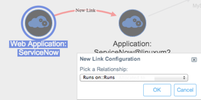
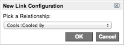

Using a BSM Map - Eureka
| |
Note: This article applies to Fuji and earlier releases. For more current information, see Business Service Map Properties at http://docs.servicenow.com
The ServiceNow Wiki is no longer being updated. Visit http://docs.servicenow.com for the latest product documentation. |
Contents
1 Overview
A business service management (BSM) map has one starting point, called the root CI or root node of the map. The root CI is highlighted with a circle around it. The maps can show both upstream and downstream dependencies for the root CI. By default the BSM map displays 3 levels, both upstream and downstream relationships, and collapses all clusters. Administrators can configure the number of levels displayed.
Use the layout controls to display map elements in different configurations for easier management. Use the filter panel to display fewer levels or to filter out elements you don't want to see, then save the filter for use later. Draw new relationships between elements or edit existing relationships.
In a BSM map, icons and glyphs indicate if a CI has an active, pending issue. You can investigate the tasks that are connected to a CI to get more details. The map collapses and expands clusters to make them easier to view.
| |
Note: If you are using a version of the ServiceNow platform other than Eureka, see the related documentation in Business Service Management Map. |
2 Accessing the Map
When you access the map from one of the view options, the map is centered on the root CI, and displays the layout and number of levels defined in Map Properties. Administrators can configure these settings.
When you access the map from a saved view, the map opens using the saved properties.
To access a BSM map, navigate to BSM Maps and open one of these modules:
- View Map in New Tab: Opens the map in a new, full screen tab without the application navigator.
- View Map: Opens the map in the content pane of the current tab.
- Saved Views: Opens a view of a map that you previously saved. Click a number in the Version column, and then click the map icon (
 ).
).
| |
Note: Adobe Flash Player is required to access BSM maps using Microsoft Internet Explorer versions 7 and 8. |
3 Managing the Map
You can manage the map using controls on the map and controls on the CI.
3.1 Map Controls
| Control | Description |
|---|---|
| CI Search Field | Select a CI from the search field above the map. Alternatively, you can start typing to have the auto-complete feature present a list of CIs that match your partial value. The search field displays the name of the root CI shown in the map and not the currently focused node. When you return to the map from another form, the system restores the last map viewed, using the default filter and layout settings. |
| Magnifier | Use the zoom control to magnify the map. Use the direction arrows to move the entire map, or the selection tool to move one or more elements. Click the selection tool again to change it into the grab tool for moving the entire map. Click the circle in the center of the direction arrows to center the image. |
| Layout | Select a layout for the map elements from the choice list. You can set a default layout through a map property.
|
| Collapse | Collapse an expanded node. The Collapse button is visible when an expand command adds new nodes to the graph.
If you expand multiple times in a row, the Collapse button only goes back one collapse action. Collapse memory is not saved to the database, and therefore is available in the current session only. |
| Export Image | Save a copy of the current map in the PNG format. |
| Print Map | Print the current map or save the map as a PDF file. |
| Save View | Save the current map view in the database. The saved view preserves node placement and filter conditions at the point in time of the save command. Each view is assigned an automatically incrementing version number in the thumbnail view. In addition, all saved views are available from the Saved Views module.
A message notifies the user that the current view has been saved. Views and versions are saved based on the current root CI. |
| Load View | Load a previously saved view of the BSM map. The selections available are thumbnail views of your saved map configuration for the root node. Selecting a thumbnail will load both the node placement and the filter conditions that were previously saved. The root node is highlighted with a circle around it. Saved views are loaded from the database. |
| Full Screen | Toggle the display of the map in and out of full screen mode. The full screen view is not supported on Internet Explorer. |
| Filter Panel | Toggle between opening and closing the filter panel. |
{kind=link}
{kind=link}
{kind=link}
{kind=link}
{kind=link}
{kind=link}
3.2 CI Node Controls
Right-click a CI node to access these controls.
| Control | Function |
|---|---|
| View CI name | Displays the record of the selected CI in a pop-up window. You can also double-click the CI to open this window. |
| Redraw layout | Redraws the map using the selected CI as the new root node, using the currently defined layout setting. |
| Expand this node | Expands the collapsed nodes in the map that are associated with the selected CI. The CI type, manufacturer, location, and relationship filters are updated to reflect the nodes on the expanded map. |
| Highlight hierarchy | Highlights related nodes upstream and downstream from the node with the color designated in the map property. The highlight appears as the node background color. The highlight also appears on nodes that are dimmed due to selected filters.
The node is related if it meets these criteria:
The children of ancestors and the ancestors of children are not included. |
| Show related tasks | Displays all tasks or outages associated with the selected CI, including incidents, problems, change requests, and follow-on tasks. This option is always available, even if there are no tasks associated with the CI. |
| Show related outages | Displays all outages involving the selected CI. This option only appears when there is an outage associated with the CI. |
| Add affected CI | Adds the selected CI to the Affected CI related list in an incident, problem, or change request. This option is only visible when you access the map from the map icon in a task record's Configuration item field. You might need to configure the incident, problem, or change form to display the Affected CI related list. |
4 Filtering the Map
Open or close the filter panel with the Filter Panel button in the map's header bar. Use the filter to control which elements of the map are highlighted and to save versions of a filter for later use.
Filter groups and controls in the filter panel are contained within collapsible strips. Click a strip to expand or collapse it. Within each strip, you can select individual items or use the All check box to select all items in that strip.
{kind=link}
- Save Filter: saves the current filter settings. The system asks you to provide a unique name for the filter and saves it to the BSM Map Filter [bsm_map_filter] table. ServiceNow overwrites an existing filter if it has the same name as the one you are saving. To view saved filters, navigate to BSM Map > Map Filters.
- Load Filter: allows you to select from a list of saved filters. When you select a saved filter, the system applies the settings to the map as appropriate for the filter groups and subgroups that are present.
{kind=link}
- Reset Filter: resets the filter to its default state. This action selects all check boxes in the group strips and resets the Stream direction and Level depth options to their default values.
4.1 Direction and Level
By default the BSM map displays three levels of upstream and downstream relationships. To change the number of levels that are displayed by default, navigate to BSM Map > Map Properties and edit the Maximum level depth from the root CI that can be initially displayed in Business Service Maps property. When you load a new CI or expand a node, the system resets the map to the configured level depth.
Use these map controls to change the view of the levels as appropriate:
- Stream direction: Direction of relationships to display. Select from Upstream, Downstream, or Both directions. The default map displays nodes in both directions.
- Level depth: Number of relationship levels to highlight for the current node. Select Show all to set the depth to the number of levels that are in your CI configuration. When you perform one of the following tasks, the system isolates that node and displays the selected number of levels in the specified direction from that node:
- Click a node
- Load a new node
- Change CIs using the search box
- Expand a node
4.2 CI Filters by Group
Expand a filter group strip to display the subgroups. For example, the CI by Type group contains subgroups such as Database, UNIX Servers, and Network Gear. Select a check box to filter the map to show CIs from that subgroup and their relationships in the map. Clear a check box to dim that subgroup of CIs in the map. Scroll long lists of subgroups.
By default all options in each group are selected. If no manufacturer or location is defined in the database, the Other check box is the only option and is selected. Clear a check box to dim those CIs or relationships. Select the All check box to highlight all CI subgroups or clear the check box to dim all subgroups. For example, you might want to clear all check boxes in a long list and then reselect only one or two subgroups to highlight. The All control only works for the current group. Make sure a group filter shows the desired view before you switch groups, since this can affect what you see in subsequent views. For example, if you dim database servers in the CI by Type group and then change to the Location group, you cannot highlight database servers in any location.
4.3 Tasks by Type and Date
Click the Tasks by Type & Date strip to show the tasks by type for the CIs on the map. Clear the check box for a task type to subtract those tasks from the total displayed in the glyph. When the last task on the CI is hidden, the glyph disappears.
Select from these task types:
- Open Incidents
- Open Problems
- Open Changes
- Open Requests
- Audit Tasks
Select a time period for the task filter from the Date opened field.
- All times
- In last 7 days
- In last 30 days
- In last 90 days
By default, an orange task glyph on a CI indicates the number of open tasks that are associated with that CI. A red glyph indicates that the CI has reached its task threshold. These properties are configurable.
5 Viewing Map Information Glyphs
When a CI has a service incident or a task associated with it, a glyph appears on the map. You can change the displayed data point for a class of icons in the Map Properties page.
Incidents, or troubles, and tasks share one glyph in the lower left corner of the CI. Each glyph has a color and a symbol. The symbol may be a number that represents a metric or count from other information. The following rules apply:
- If there are tasks but no troubles, the glyph color is orange. The glyph color turns red if the number of tasks reaches the configured threshold (default is 3)
- If there are troubles, with or without tasks, the glyph uses the color set in the Map Indicator module.
- If there are troubles with no tasks, the symbol is an exclamation mark (!)
You can change the color of the glyph in the Map Indicators module.
| |
Note: For information on how glyphs and color highlighting are used with clusters and collapsed nodes, see Collapsed Elements in a BSM Map. |
The glyphs that appear on the CI icons provide the following information.
| Glyph | Name | Description |
|---|---|---|
| Cluster node | Shows the number of elements in a collapsed cluster node. To expand the node, right-click the CI and select Expand this from the context menu. | |
| Collapsed node | Shows the number of CIs in a collapsed node. To expand the node, right-click the CI and select Expand this from the context menu. | |
| Task threshold exceeded | Appears when the configured threshold for number of tasks is reached. Indicates the total number of tasks associated with the CI. To view the tasks associated with this CI in a pop-up window, right-click the CI and select Show Related Tasks from the context menu. | |
| Task count | Shows the number of open tasks associated with this node. To view the tasks associated with this CI in a pop-up window, right-click the CI and select Show Related Tasks from the context menu.
Alternatively, point to the glyph to display a pop-up window with detailed information about tasks associated with this CI.
| |
| Trouble with no tasks | Indicates that there are troubles but no tasks. To view the incidents associated with this CI in a pop-up window, right-click the CI and select Show Related Outages from the context menu. | |
| Add relationship | Creates relationships between CIs. See Managing Relationships in the Map. |
{kind=link}
{kind=link}
{kind=link}
{kind=link}
{kind=link}
{kind=link}
{kind=link}
6 Exporting a Map
You can export a BSM map to an image in the PNG format.
- In the map page, click Export Image.
- A thumbnail image of the map appears.
- Right-click the thumbnail and select Save Image As.
- Save the PNG image to the local drive or to a location on the network.
{kind=link}
7 Managing Relationships in the Map
You can create new relationships between CIs in the BSM map. You can also edit or delete existing relationships. All changes to relationships are automatically updated in the CMDB.
7.1 Viewing Relationships
To identify a current relationship, point to the relationship link to activate the label.
To make connectors more visible in congested areas of the map:
- Select the connector.
- Click and drag the blue spot that appears to make the line curve.
{kind=link}
7.2 Creating Relationships
The following rules apply to creating a relationship between nodes on the map:
- You cannot add a relationship to or from a CI if the node is collapsed.
- You cannot create a relationship from a CI to itself.
- You cannot create a relationship between an active node and a dimmed node.
- You can add a relationship to or from a cluster node.
| |
Note: The BSM map only displays the upstream and downstream relationships from the root node selected as the focus of the map. It does not show any direct relationships between a child of the root node and a parent of the root node. If you add such a relationship and redraw the map with the same root node, the relationship line does not appear on the map. However, if you focus the map on a different root node directly upstream or downstream of the new relationship, the connector appears where you created it. |
- Select the CI you want to use as the parent in the relationship.
- Click the plus glyph and drag a new connector to the child CI.
- A link configuration dialog box appears.
- 
- Select a relationship from the choice list and click OK.
{kind=link}
{kind=link}
{kind=link}
7.3 Viewing Changes to a Relationship
Changes that involve relationships between CIs are automatically recorded in the configuration record for each CI. You can view the changes in the Audit Records section as relationship removed or relationship added. You may need to configure the form to display the audit records.
{kind=link}
To open the configuration record for the CI:
- Right-click the CI node
- Select the View option on the context menu.
7.4 Editing Relationships
You cannot right-click to edit the relationship link if the relationship type is not defined in the CI Relationship Type [cmdb_rel_type] table.
To edit the type of relationship between two CI nodes if the relationship type is defined in the cmdb_rel_type table:
- Right-click the connector.
- Select Edit connection from the context menu.
- The Edit Link Configuration dialog box appears. The current relationships is selected.
- 
- Select a new relationship from the choice list.
- Click OK.
{kind=link}
7.5 Deleting Relationships
| |
Note: When you delete a relationship between two nodes, the application does not require confirmation. The relationship is immediately removed from the CMDB. |
To delete a relationship, right-click the connector and select Remove connection from the context menu.
You cannot delete the relationship if the relationship type is not defined in the CI Relationship Type [cmdb_rel_type] table.